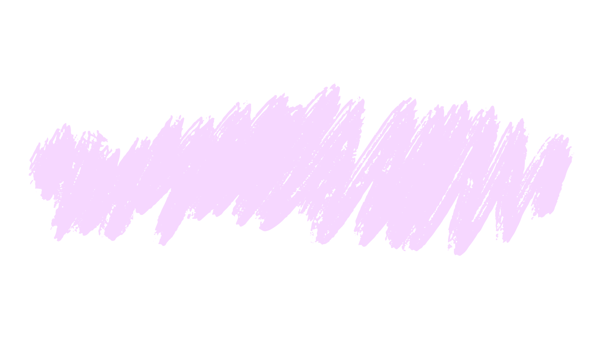

 Select Mode
Timeline
Dive into a detailed timeline of your past conversations, reliving each memory in the order it happened. Track the highlights, see how your chats evolved, and enjoy a nostalgic look back at your story over time.
2 Truths 1 Altered
Challenge your memory with a twist! We’ll present three statements from your past chats, but one of them has been subtly altered. Can you spot the difference and identify which memory doesn’t match the original?
News Article
Experience your conversations like never before, formatted as a news article. Our AI pulls key highlights and memorable exchanges, presenting them as a narrative that captures the essence of your chats with a fresh, journalistic touch.